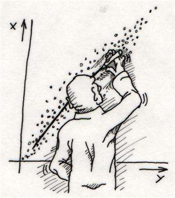
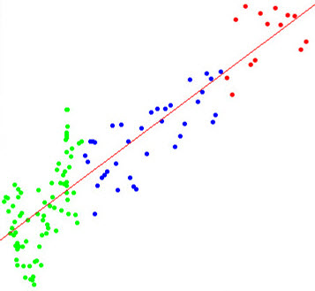

| I am a machine learning / data analytic enthusiast with an in-depth, practical understanding of statistical modelling and machine learning techniques. Being involved in various modeling projects, including, but not limited to, clustering, linear regression, SVM, nearest neighbors, neural networks..
email | cv | github
deblina170891@gmail.com
|
|
|
Projects
 |
Relation Between Expenditure And Revenue Earned By West Bengal Government Through Taxation
pdf summary code
We Studied the dependence of expenses incurred on various types of taxes collected by West Bengal Government and developed a Multiple Linear Regression model getting sales tax as the most significant contributor to the Expenditure at level of significance 0.05 by variable selection method.
@article{pamishapeTulsianiKCM15,
author = {Shubham Tulsiani and
Abhishek Kar and
Jo{\~{a}}o Carreira and
Jitendra Malik},
title = {Learning Category-Specific Deformable 3D
Models for Object Reconstruction},
journal = {TPAMI},
year = {2016},
}
|
 |
Relationship of Amount of Vapor generated with Dispensed gasoline and Initial condition of the tank
pdf summary
Deduced relationship of vapor generated with tank temperature, gasoline temperature, vapor pressure in tank and vapor pressure of gasoline.Developed a Linear Regression model using AIC, BIC and Cross Validation approach to find the best fit for the given data set.
@incollection{appFlowZhou16,
author = {Tinghui Zhou and
Shubham Tulsiani and
Weilun Sun and
Jitendra Malik and
Alexei A. Efros},
title = {View Synthesis by Appearance Flow},
booktitle = arxiv:1605.03557,
year = {2016}
}
|
|
Time Series Analysis of S&P 500 Index
pdf summary
Developed and tested an ARIMA model for S&P 500 Index price using historical closing price for last 40 years and analysed stationarity of series.Used the model for analyzing trend and forecasting Index price for next 10 days getting an accuracy of 90% at 95% level of confidence
@article{malik2016three,
title={The three R's of computer vision:
Recognition, reconstruction and reorganization},
author={Malik, Jitendra and
Arbel{\'a}ez, Pablo and
Carreira, Jo{\~a}o and
Fragkiadaki, Katerina and
Girshick, Ross and
Gkioxari, Georgia and
Gupta, Saurabh and
Hariharan, Bharath and
Kar, Abhishek and
Tulsiani, Shubham},
journal={Pattern Recognition Letters},
volume={72},
pages={4--14},
year={2016},
publisher={North-Holland}
}
|
|
Effect of ExtraCurricular Activities on Study
pdf summary
Determined impact of various extracurricular activities on study of students from different streams of IIT using Two Stage Random Sampling and Hypothesis Testing.Developed a linear model between time spent in Extracurricular activities and CPI.
@incollection{shapeSymTulsianiKHCM15,
author = {Shubham Tulsiani and
Abhishek Kar and
Qixing Huang and
Jo{\~{a}}o Carreira and
Jitendra Malik},
title = {Shape and Symmetry Induction
for 3D Objects},
booktitle = arxiv:1511.07845,
year = {2015},
}
|

|
Face Recognition using Eigenfaces
Shubham Tulsiani, João Carreira, Jitendra Malik
ICCV, 2015
pdf summary code
Used Principle Component Analysis and K Nearest Neighbor algorithm to classify faces in given data set and find 10 closest faces in dataset.Used the model to create an attendance system by using multiple face images of every student in a class with an accuracy of 95% Technical Skills
@inProceedings{poseInductionTCM15,
author = {Shubham Tulsiani and
Jo{\~{a}}o Carreira and
Jitendra Malik},
title = {Pose Induction for Novel Object Categories},
year={2015},
booktitle={International Conference on Computer Vision (ICCV)}
}
|
|
|
|